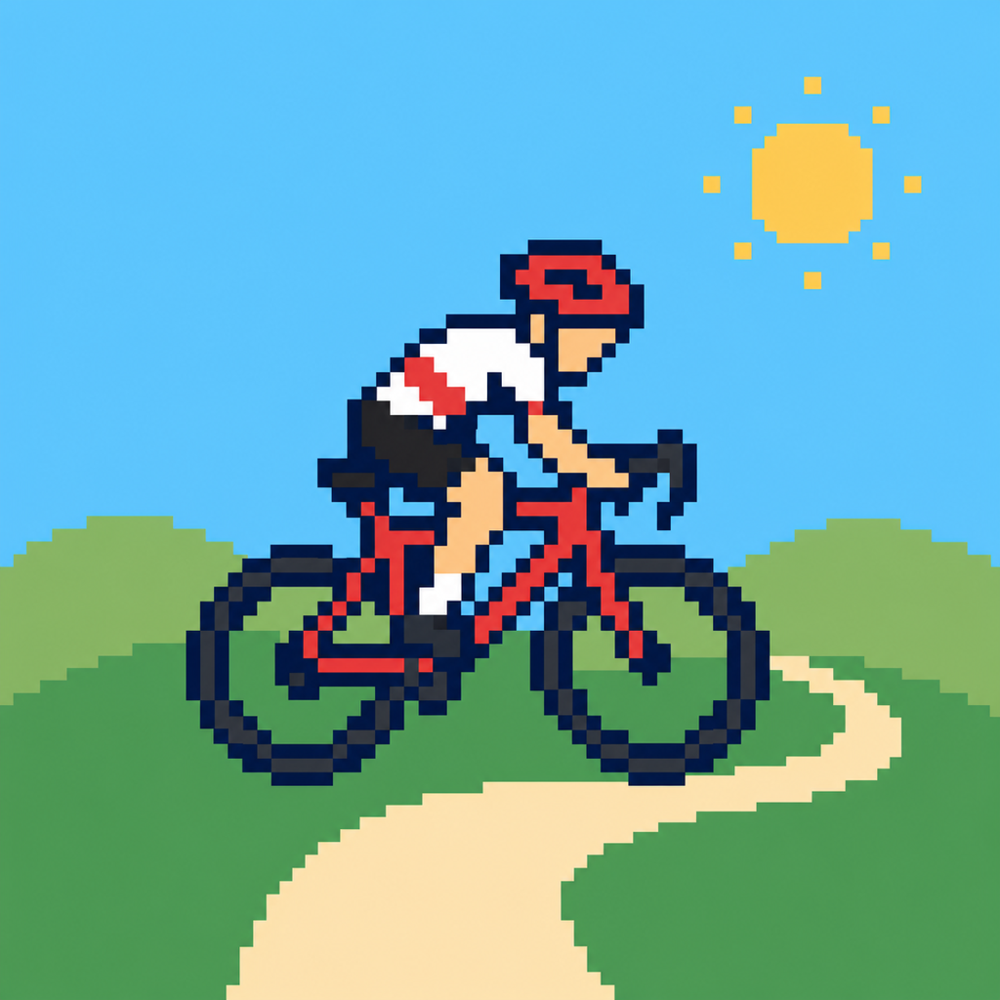
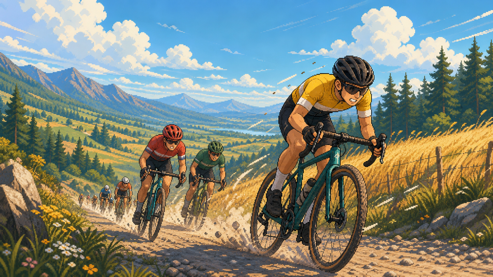

Fundament aplikacji
Menu, tworzenie zawodnika, tydzień kariery, warsztat, sponsor i pierwszy lokalny start jako krótki cinematic race event.

RoadToUCIGra kolarska na iOS
Poprowadź młodego kolarza od bocznych dróg, lokalnych startów i używanego roweru aż do świata wielkiego ścigania.
O co chodzi
RoadToUCI łączy rozwój zawodnika, trening, regenerację, sprzęt, sponsorów, relacje i wyścigi. Każdy tydzień kariery ma wpływać na to, co wydarzy się na trasie: forma, morale, zmęczenie, rower i ryzyko mają znaczenie przed startem oraz w samym wyścigu.
Plan rozwoju
Menu, tworzenie zawodnika, tydzień kariery, warsztat, sponsor i pierwszy lokalny start jako krótki cinematic race event.
Krótka ścieżka kariery, jasne konsekwencje decyzji i pytanie do testerów: co daje frajdę, a co warto rozwinąć.
Ręczne ściganie w SpriteKit: energia, drafting, ataki, pozycja w grupie, rywale i czytelny HUD na telefonie.
Kalendarz sezonu, rosnące stawki, sprzęt, reputacja, sponsorzy i kilka startów, które tworzą poczucie drogi.

Pierwsze demo
Demo ma pomóc odpowiedzieć na proste pytania: czy droga od amatora do mocniejszego kolarza jest ciekawa, czy wyścig ma napięcie, czy sprzęt i sponsorzy są zrozumiałe oraz jakie elementy gracze chcą zobaczyć w kolejnych wersjach.
Feedback po demo
Formularz przygotowuje gotowe zgłoszenie na GitHubie. Najbardziej pomagają konkretne odpowiedzi: moment, który zapamiętałeś, rzecz do poprawy i funkcja, którą najchętniej zobaczyłbyś w następnej wersji.
Otwórz pełny formularz GitHub